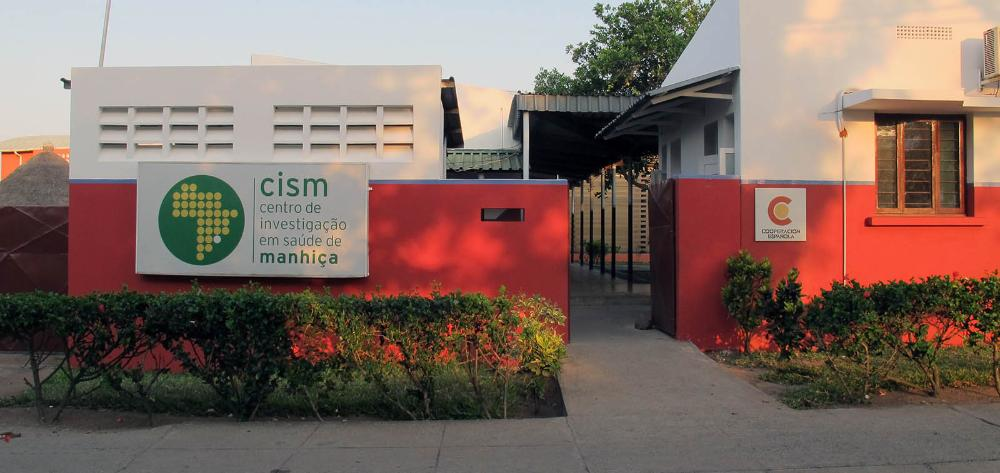
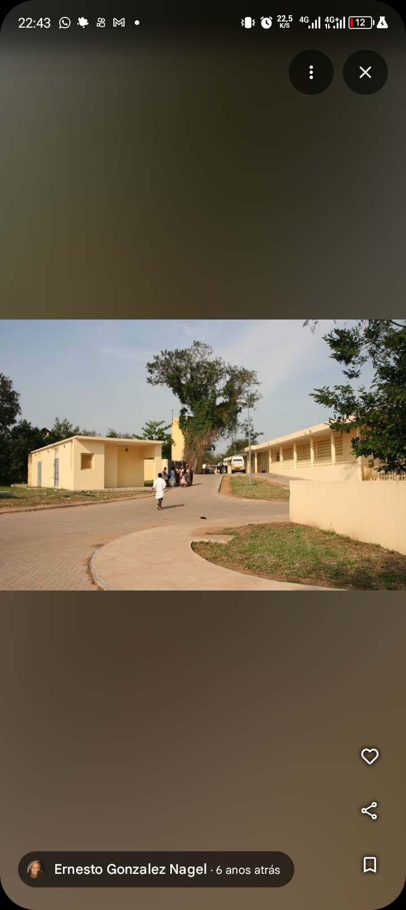
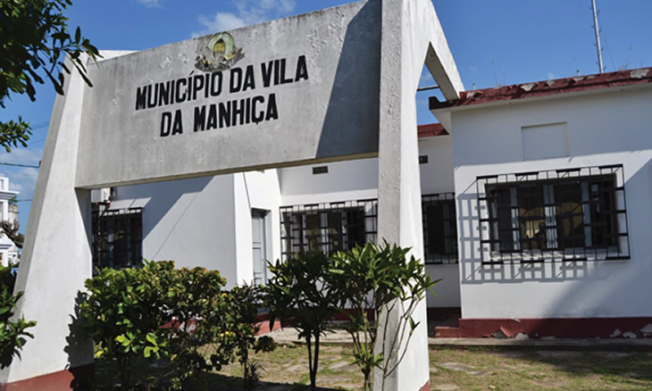
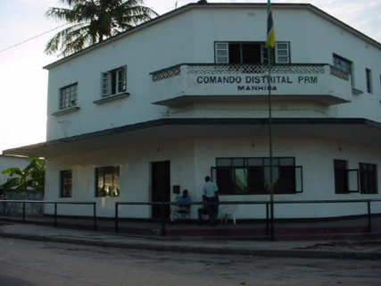
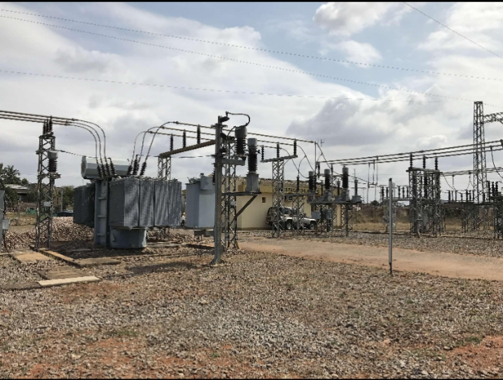
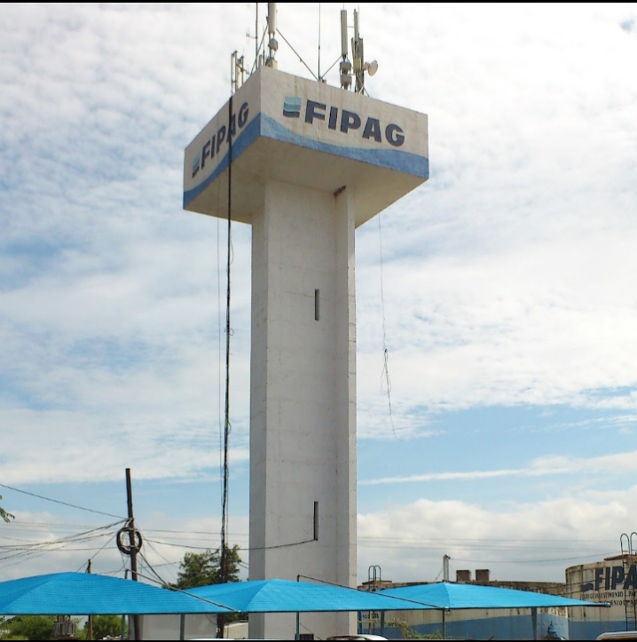
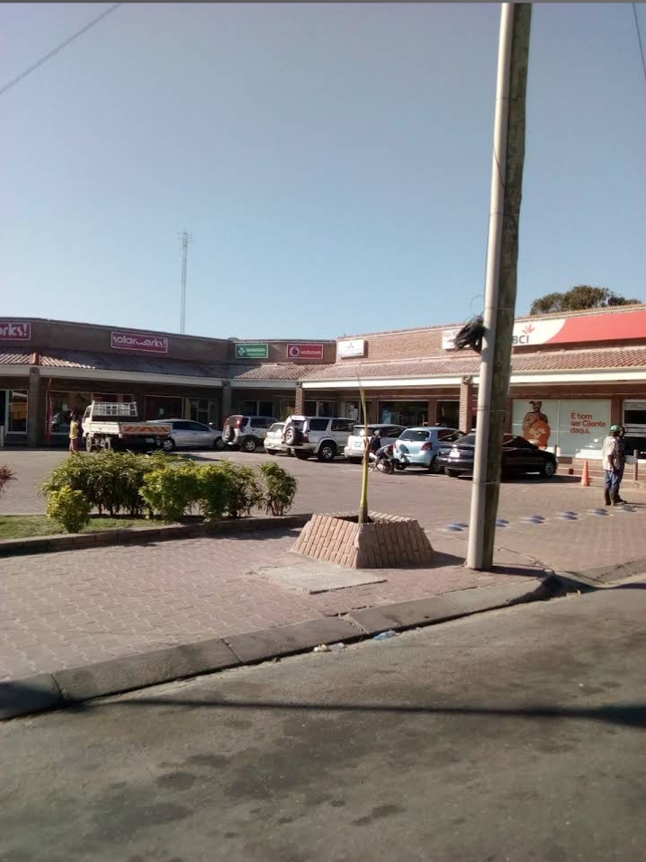

Serviços Essenciais
Saúde, governo, segurança e serviços do dia a dia no Distrito da Manhiça.

CISM
Centro de Investigação em Saúde de Manhiça: pesquisa e saúde pública.
Saúde
Hospital Distrital da Manhiça
Consultas, internamento, maternidade e urgências 24h.
Saúde
Município da Manhiça
Licenças, DUAT, taxas e serviços municipais.
GovernoGoverno Distrital
Administração e serviços do distrito.
Governo
PRM – Comando Distrital
Esquadra, denúncias e segurança.
Segurança
EDM
Energia elétrica e novas ligações.
Casa e dia a dia
FIPAG
Água potável e serviços.
Casa e dia a dia
Banco BCI
ATM, contas e levantamentos.
Casa e dia a dia